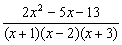
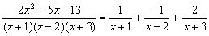
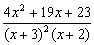
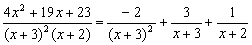
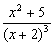
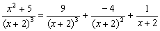
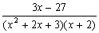
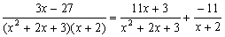

部份分式(II)
程式可以分解一個多項式分式為部份分式(Partial Fraction)，其中分子為是二次多項式 Ax2 + Bx + C，而分母為三次多項式，可以是 (x + a)(x + b)(x + c) 或 (x2 + bx + c)(x + c)，其中 A, B, C, a, b, c 均為實數。注意本程式的多項式全部以降冪排列(包括分式)。
程式編寫日期: 2006年12月18日
程式(235步)
| 1 | Kin 6 | 2. | 0 | 3. | ) | 4. | HLT | 5. | Kin 1 |
| 6. | 0 | 7. | ) | 8. | HLT | 9. | Kin 2 | 10. | 0 |
| 11. | = | 12. | HLT | 13. | Kin 3 | 14. | x2 | 15. | × |
| 16. | ENT | 17. | Kin 4 | 18. | - | 19. | Kout 3 | 20. | × |
| 21. | ENT | 22. | Kin 5 | 23. | + | 24. | ENT | 25. | Min |
| 26. | = | 27. | ÷ | 28. | ( | 29. | Kout 2 | 30. | - |
| 31. | Kout 3 | 32. | × | 33. | Kout 1 | 34. | + | 35. | Kout 3 |
| 36. | x2 | 37. | + | 38. | 5 | 39. | 0 | 40. | +/- |
| 41. | 10x | 42. | = | 43. | Kin × 6 | 44. | + | 45. | ( |
| 46. | ( | 47. | MR | 48. | - | 49. | Kout 6 | 50. | × |
| 51. | Kout 2 | 52. | ) | 53. | ÷ | 54. | ( | 55. | Kout 3 |
| 56. | + | 57. | 5 | 58. | 0 | 59. | +/- | 60 | 10x |
| 61. | ) | 62. | + | 63. | ( | 64. | Kout 4 | 65. | - |
| 66. | Kout 6 | 67. | + | 68. | Kout 6 | 69. | x2 | 70. | x > 0 |
| 71. | AC | 72. | MR | 73. | - | 74. | Kout 3 | 75. | × |
| 76. | Kout 5 | 77 | + | 78. | Kout 4 | 79. | × | 80. | Kout 3 |
| 81. | x2 | 82. | = | 83. | ÷ | 84. | ( | 85. | Kout 3 |
| 86. | - | 87. | Kout 1 | 88. | + | 89. | 4 | 90. | 0 |
| 91. | +/- | 92. | 10x | 93. | ) | 94. | ÷ | 95. | ( |
| 96. | Kout 3 | 97. | - | 98. | Kout 2 | 99. | + | 100. | 4 |
| 101. | 0 | 102. | +/- | 103. | 10x | 104. | ) | 105. | + |
| 106. | ( | 107. | ( | 108. | MR | 109. | - | 110. | Kout 2 |
| 111. | × | 112. | Kout 5 | 113. | + | 114. | Kout 4 | 115. | × |
| 116. | Kout 2 | 117. | x2 | 118. | ) | 119. | ÷ | 120. | ( |
| 121. | Kout 2 | 122. | - | 123. | Kout 1 | 124. | + | 125. | 4 |
| 126. | 0 | 127. | +/- | 128. | 10x | 129. | ) | 130. | ÷ |
| 131. | ( | 132. | Kout 2 | 133. | - | 134. | Kout 3 | 135. | + |
| 136. | 4 | 137. | 0 | 138. | +/- | 139. | 10x | 140. | ) |
| 141. | + | 142. | ( | 143. | ( | 144. | MR | 145. | - |
| 146. | Kout 1 | 147. | × | 148. | Kout 5 | 149. | + | 150. | Kout 4 |
| 151. | × | 152. | Kout 1 | 153. | x2 | 154. | ) | 155. | Kin 6 |
| 156. | ÷ | 157. | ( | 158. | Kout 1 | 159. | - | 160. | Kout 2 |
| 161. | + | 162. | 4 | 163. | 0 | 164. | +/- | 165. | 10x |
| 166. | ) | 167. | ÷ | 168. | ( | 169. | Kout 1 | 170. | - |
| 171. | Kout 3 | 172. | + | 173. | 4 | 174. | 0 | 175. | +/- |
| 176. | 10x | 177. | ) | 178. | + | 179. | ( | 180. | Kout 1 |
| 181. | - | 182. | Kout 2 | 183. | ) | 184. | x2 | 185. | x > 0 |
| 186. | AC | 187. | ( | 188. | MR | 189. | - | 190. | Kout 3 |
| 191. | Kin - 1 | 192. | × | 193. | Kout 5 | 194. | + | 195. | Kout 4 |
| 196. | Kin × 2 | 197. | × | 198. | Kout 3 | 199. | x2 | 200. | = |
| 201. | Kin 3 | 202. | 4 | 203. | 0 | 204. | +/- | 205. | 10x |
| 206. | Kin + 1 | 207. | Kout 1 | 208. | x2 | 209. | Kin ÷ 3 | 210. | Kout 3 |
| 211. | + | 212. | ( | 213. | Kout 4 | 214. | - | 215. | Kout 3 |
| 216. | + | 217. | ( | 218. | Kout 6 | 219. | ÷ | 220. | Kout 1 |
| 221. | +/- | 222. | + | 223. | Kout 1 | 224. | x2 | 225. | x2 |
| 226. | x > 0 | 227. | AC | 228. | Kout 6 | 229. | HLT | 230. | Kout 2 |
| 231. | Kin - 5 | 232. | Kin - 5 | 233. | Kout 5 | 234. | HLT | 235. | Kout 4 |
註1: 只有在輸入分子時才會出現"ENT"的細字。
註2: 程式以降冪的原則輸入係數，答案出現的分子係數與輸入分母的因子次序一致，若果分母輸入係數相同，答案則以分母的冪降冪出現。
例題1: 將下列分式代為部份分式

按 0 P1 (0表示分母可以完全分解)
1 RUN - 2 RUN 3 RUN (先輸入分母係數，因為分母為三次，冪數較高)
2 RUN - 5 RUN - 13 RUN (分子係數，顯示第一項分式的分子為1)
RUN (顯示第二項分式的分子為 - 1)
RUN (顯示第三項分式的分子為 2)
計算完結後按 AC 終止程式
所以答案為:

例題2: 將下列分式代為部份分式

按 0 P1 (0表示分母可以完全分解)
3 RUN 3 RUN 2 RUN (分母因子係數，按降冪排列所以先輸入二次項的兩個3)
4 RUN 19 RUN 23 RUN (分子係數，顯示分母(x+3)2分母的分子為 -2)
RUN (顯示分母(x+3)的分子為 3)
RUN (顯示第三項分式的分子為 1)
計算完結後按 AC 終止程式
所以答案為:

例題3: 將下列分式代為部份分式

按 0 P1 (0表示分母可以完全分解)
2 RUN 2 RUN 2 RUN (先輸入分母因子的係數)
1 RUN 0 RUN 5 RUN (分子係數，顯示分母(x+2)3的分子為9)
RUN (顯示分母(x+2)2的分子為 - 4)
RUN (顯示分母(x+2)的分子為 1)
所以答案為:

例題4: 將下列分式代為部份分式

按 1 RUN P1 (1表示分母不可以完全分解)
2 RUN 3 RUN 2 RUN (輸入分母因子係數，按降冪所以先輸入二次項係數)
0 RUN 3 RUN - 27 RUN (分子係數，顯示二次分母的分子x係數為11)
RUN (顯示二次分母的分子常數項為 3)
RUN (顯示一次分母的分子為 -11)
計算完結後按 AC 終止程式
所以答案為:
